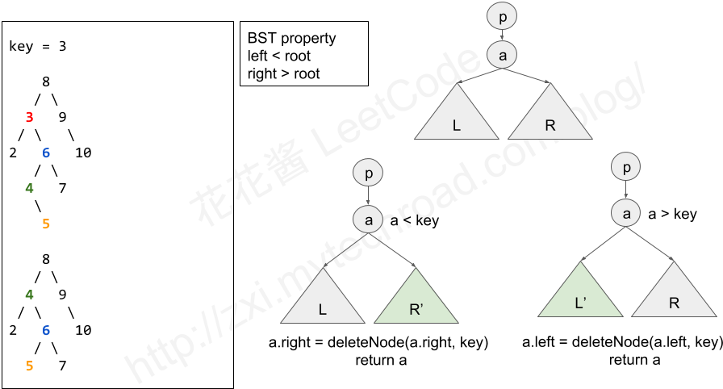
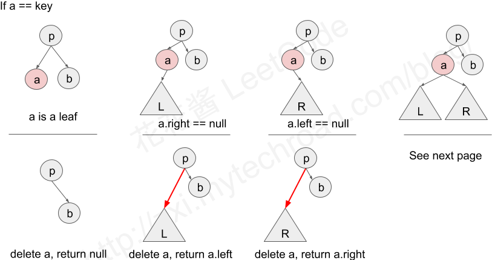

LeetCode450 - (medium) Delete Node in a BST
文章目录
Task
Given a root node reference of a BST and a key, delete the node with the given key in the BST. Return the root node reference (possibly updated) of the BST.
Basically, the deletion can be divided into two stages:
- Search for a node to remove.
- If the node is found, delete the node. Note: Time complexity should be O(height of tree).
Examples
|
|
Solution
- 删除值为key的节点，首先要找到这个节点，从根节点开始搜索。未找到等于key的节点时，如下图：
- 若当前节点a小于key，则进入右子树搜索
- 若当前节点a大于key，则进入左子树搜索
- 若当前节点a等于key，后面分析 
- 若找到了等于key的节点，即当前节点a等于key，如下图：
- 若当前节点a没有子树，则直接删除节点a，并将指向它的指针置为空
- 若当前节点a只有左子树，则让节点a的父节点接管其左子树，删除节点a
- 若当前节点a只有右子树，则让节点a的父节点接管其右子树，删除节点a
- 若当前节点a同时有左子树和右子树，后面分析 
- 若当前节点a等于key，且当前节点a同时有左子树和右子树，如下图：
- 可在左子树中找最大的节点替换当前节点，也可在右子树中找最小的节点替换当前节点。不失一般性，选后者
- 在当前节点a的右子树中找最小节点m，即是找a的右子树中最左边的节点m，它一定只有右子树或者没有子树
- 两种实现：
- 将节点a的值替换为m的值，此时树中有两个值为m的节点，再在a的右子树中递归地删除值为m的节点即可。由于m只有右子树，可直接跳到递归终点。（这种方法的缺点是：若之前有一个指针指向m，则删除m后该指针悬空）
- 使用指针操作将节点m移动到节点a的位置上，再删除节点a。（若之前有一个指针指向m，操作后该指针仍有效）

时间复杂度：找到值为key的节点后或者直接让父节点接管子树，或者继续查找右子树的最小节点，故时间复杂度O(h)空间复杂度：取决于递归深度，O(h)- 第一种实现：
|
|
- 第二种实现：
|
|